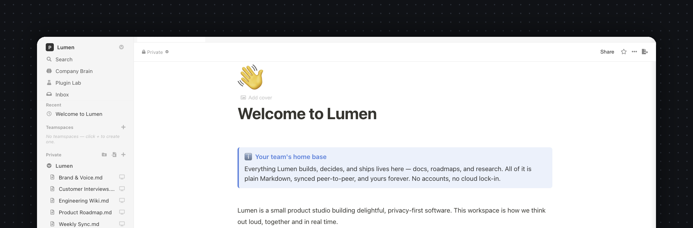
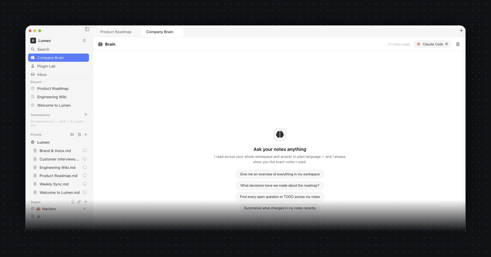
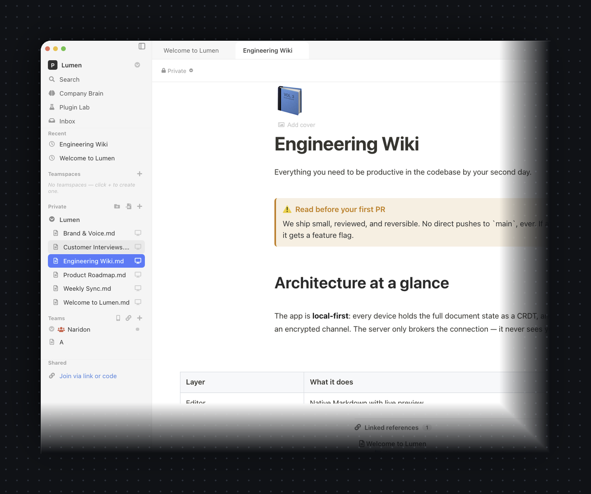
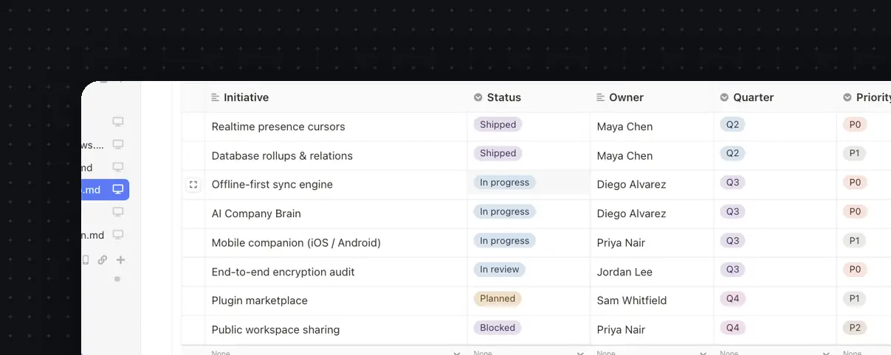
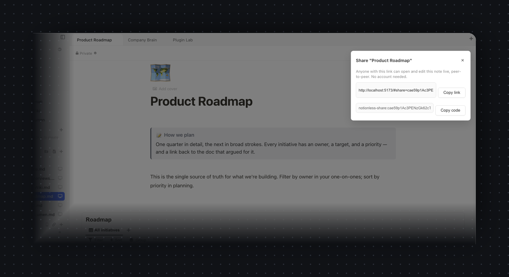
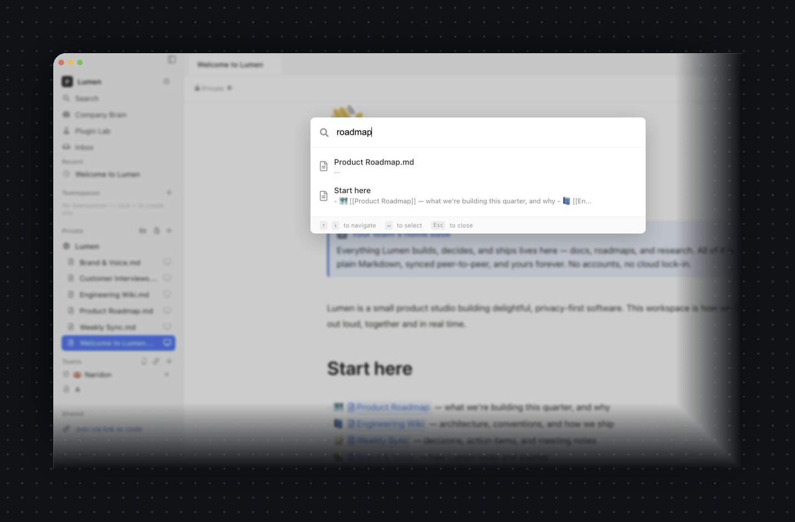
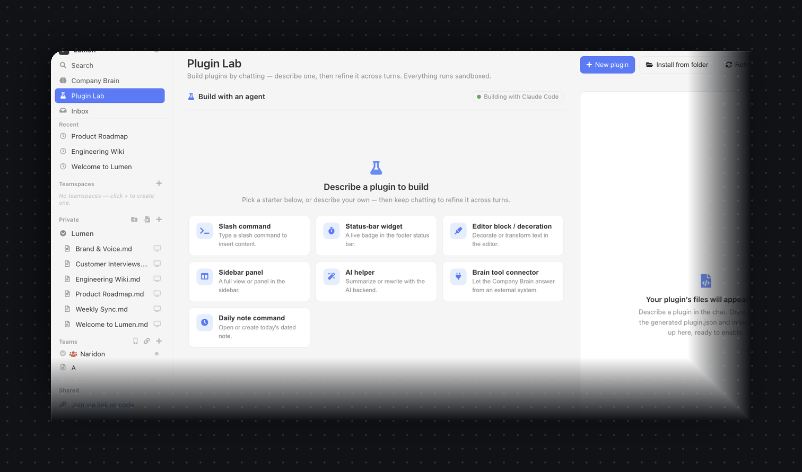

Paperus is the open-source, local-first Notion alternative. Plain-Markdown notes that sync peer-to-peer, end-to-end encrypted — with a Company Brain that answers across your whole workspace using the Claude Code you already run, or a fully-local model. No account. No cloud. No lock-in.

Ask anything across every note in plain language. Retrieval runs 100% on your machine — your notes are indexed on disk and never uploaded to index them. For the answer, plug in the intelligence you trust: the Claude Code you already run, a fully-offline local model, or your own API key.
claude-code, local ollama, or any OpenAI-compatible key — per workspace, no rebuild.
All the structure you want, none of the lock-in. Local-first, peer-to-peer, and open source from day one.
Every note is a standard .md file in your own folder. Open them in any editor, back them up with git, keep them forever.
No accounts, no logins. Create a team and share a single invite link — teammates open the app and join instantly.
Edits sync directly between devices over WebRTC. The relay only ever sees hashed topics and ciphertext — never your content.
CodeMirror 6 with live preview, slash commands, callouts, toggles, tables, math and Mermaid — it reads like a document, not raw syntax.
Table, board, list and calendar views over the same data, with typed columns — status, select, person, date, number — plus filters, sorts, grouping and roll-ups. Every row opens as its own page, and the whole table stays portable Markdown.
Ask across your whole workspace. Local retrieval, grounded answers with citations, powered by your own claude-code, local Ollama, or API key.
Pair an iOS or Android phone to your team with one link or a QR scan, then read and edit on the same end-to-end encrypted P2P swarm.
Add blocks, slash commands, sidebar panels, AI providers and outside connectors through a sandboxed, capability-scoped plugin API.
Run the web app and the relay on your own domain with one docker compose — automatic HTTPS, no database. Or just use the free public relay at oss.naridon.com.
A fast, modern editor and real databases — on top of a radically simpler model underneath.
CodeMirror 6 with live-preview decorations: headings, callouts, checklists and tables render as you type — yet every keystroke stays plain Markdown on disk.

Turn any page into a database and view it as a table, board, list or calendar. Typed columns, colored pills, filters, sorts, grouping and roll-ups — exactly the structure you came to Notion for. The difference: there's no hosted database. The whole table lives inside your .md file, on your disk, yours to keep.

Flip the same rows between Table, Board, List and Calendar — no copies, no re-entry.
Status, select, person, date, number, checkbox and text — with colored pills and each row opening as its own page.
Slice with filters and sorts, group rows by any column, and summarize with roll-ups — all saved per view.
Anyone with the link opens the note and edits it live, directly peer-to-peer. No seats, no invites to manage, nothing to sign up for.


Quick-find searches every note's title and content with live results as you type — keyboard-first, no waiting on a server.

Slash commands, sidebar panels, editor blocks, AI providers and outside connectors — sandboxed and capability-scoped. Describe one in the Plugin Lab and it's scaffolded for you.
No onboarding, no workspace setup wizard. Install, write, share.
Download for macOS and open it. Your notes live in a local folder you choose — nothing leaves your machine until you share.
Pick a team name and a username + password. That derives your identity locally — it's never sent to a server.
Send the notionless://invite link. Teammates open it in the app and start editing with you in real time, peer-to-peer.
Use it free with nothing to host, or self-host the full online app on your own box. Same notes, same encryption — you pick the trade-off.
Install the desktop or mobile app and go. Your devices and teammates sync directly, peer-to-peer, end-to-end encrypted. The only thing in the middle is Naridon's free global relay that helps peers find each other — it brokers connections and stores nothing, not even your docs.
One command on your own box brings up a Notion-style web app you can open from any browser, anywhere — with every note stored encrypted and available 24/7 and always-on realtime collaboration, even with every laptop closed. Docs stay synced across web, desktop and mobile. The box only ever holds ciphertext — it can never read a word.
NL_MODE=online (default) or NL_MODE=p2p.
Don't want to depend on us at all? Host the web app and the relay yourself
with one command — at your own address like docs.yourcompany.com.
HTTPS is automatic, there's no database to set up, and your team just opens it
in a browser. Nothing to install.
docker compose up brings up the web app + relay together — no Postgres, no Redis, no config files.Two pieces — a static web app and a tiny relay. Run both on one box, or split them across the hosts you already use.
Set up Paperus (github.com/Naridon-Inc/paperus) on this machine — a self-hosted, end-to-end-encrypted Notion alternative. 1. Ensure Docker + Docker Compose are installed and running. 2. Clone the repo if it isn't already here, then cd in. 3. Copy .env.selfhost.example to .env. Ask me for my domain and email, and set NL_DOMAIN and NL_TLS_EMAIL. For a local-only test, set NL_DOMAIN=:80 instead. 4. Run: docker compose -f docker-compose.selfhost.yml up -d 5. Wait until healthy, check /health, and tell me the URL to open. If I gave a domain, remind me to point a DNS A record here and open ports 80 and 443. Explain each step as you go, and confirm before anything destructive.
Zero terminal. Hand this to a coding agent on your server or laptop and it clones, configures, launches, and gives you a URL — asking for your domain along the way.
The whole thing on one box. Web app and relay together, with automatic Let's Encrypt HTTPS on your domain — no database, no config files. Recommended.
UI on Vercel's CDN. Point VITE_SIGNALING_URL at your own relay or the free public one. There's a one-click Deploy button in the README.
UI on Netlify. Build command and SPA redirects come from the committed netlify.toml — import and go.
UI on Cloudflare Pages. Add a _redirects file with /* /index.html 200 for SPA routing. GitHub Pages works the same way.
The relay (the WebSocket piece). Uses the committed backend/fly.toml and stays always-on. Pair it with any static web host above.
The relay via Render Blueprint. Use a paid instance so the WebSocket connection doesn't sleep.
Full step-by-step for every platform → self-hosting guide
Your pages and databases are real — but there's no vendor server holding them. Most apps put your words in a row in their database; Paperus keeps everything as files on your machine and syncs the edits directly between devices.
Every note is a real .md file in a folder you choose. A small .notionless manifest keeps a stable ID per note, so files can move or rename without losing their sync identity.
Edits are conflict-free data types, so two people typing at once always converge — no "document locked", no lost keystrokes, and it works fully offline.
Updates are encrypted with libsodium AEAD before they leave your device. A separate transport channel carries only sealed ciphertext between peers.
One tiny service helps peers find each other over hashed topics. No database, no accounts — by default it stores nothing. Self-host it in seconds, or flip it into a full online app that keeps your encrypted notes available 24/7.
| Paperus | Typical cloud notes app | |
|---|---|---|
| Where your notes live | Markdown files on your disk | A vendor's database |
| Account required | None | Email + password, on their servers |
| Built-in AI | Your own Claude Code / local model | Their model, your notes uploaded |
| Who can read your notes | Only the people you share with | The vendor — and whoever can compel them |
| Works offline | Always — files are local | Sometimes, via a cache |
| Real-time collaboration | Peer-to-peer CRDTs | Routed through their server |
| Exporting your data | Nothing to export — it's already your folder | Proprietary export, if offered |
| Price | Free & open source | Monthly subscription |
Built for small teams who'd rather own their notes than rent them.
We can't read your notes because we never get them. Here's exactly what that means — and the honest trade-offs.
Your identity is an Ed25519 keypair derived from your password with Argon2id, held in memory only. There's no password database to breach.
Notes are encrypted (libsodium AEAD) before they touch the wire. The signaling relay brokers connections over hashed topics and stores nothing.
The Company Brain indexes and searches your notes locally. Only the question and the few snippets you ask about reach the model backend you chose — and with local Ollama, nothing leaves at all.
The whole client and the relay are on GitHub. Verify the crypto and the claims yourself, or run your own relay end to end.
Honest trade-offs: anyone with a team link can read that team's roster and could brute-force a weak member password offline (mitigated by Argon2id + a strength meter). There's no remote revocation — removing someone means rotating the team to a new link. Small teams by design.
Free and open source. No account required to download or to use it.
A universal disk image that runs natively on Apple Silicon and Intel — code-signed and notarized by Apple, so it opens with no Gatekeeper warnings.
Download the latest releasev1.3.0 · universal (Apple Silicon + Intel) · signed & notarized · macOS 11+ · ~260 MB
On your phone too: a native iOS & Android companion pairs to your team with one link — build it from source.
Windows & Linux builds are on the roadmap — star the repo to get notified.
The Company Brain is a tool-using agent over your notes, and its answer model is pluggable. Set the backend to claude-code and it calls the Claude Code CLI you already have installed — so you reuse your existing Claude, with no extra key to manage. Prefer fully offline? Switch to local ollama. Have an API key? Use any OpenAI-compatible endpoint. Retrieval over your notes is always local, regardless of backend.
Indexing and search run entirely on your machine — your notes are never bulk-uploaded to be searched. When you ask a question, only that question plus the handful of relevant snippets are sent to the model backend you picked. Choose local Ollama and nothing leaves your device at all. Choose Claude Code or your own API and only those snippets go, under your own account.
Yes — free and open source, forever, under AGPL-3.0. There are no paid tiers, no subscriptions, and no account to create. The code for both the app and the relay is public on GitHub.
On your device, as plain Markdown files in a folder you pick. Nothing is uploaded to a cloud. When you collaborate, encrypted updates flow directly between teammates' devices.
No. You create a team locally with a name and a username + password, which derive your identity on-device. You then share one invite link — there's no server-side user database anywhere.
The only hosted piece is a tiny stateless signaling relay that helps peers find each other. It sees hashed topic names and end-to-end-encrypted blobs — never your note titles, content, or keys — and it stores nothing.
Yes — and you get more than a relay. Clone the repo, copy .env.selfhost.example to .env, set NL_DOMAIN=docs.yourcompany.com, and run docker compose -f docker-compose.selfhost.yml up -d. That brings up a full online Notion on your own box: a browser app on your domain (automatic Let's Encrypt cert, no database), every note stored encrypted and available 24/7, always-on realtime collab, and docs synced across web, desktop and mobile. The box only ever holds ciphertext — it can never read your notes, and it's your hardware, not ours. One switch picks the trade-off: NL_MODE=online (the default above) or NL_MODE=p2p for a pure peer-to-peer relay that stores nothing. See the self-hosting guide.
When you self-host, yes — the same app runs in the browser at your domain, so teammates don't have to install anything. You can optionally turn on an email/password sign-in gate for your instance (the first account becomes the admin). Important: because your notes are end-to-end encrypted, that account only controls access to the instance — it can never decrypt your content. You still join teams with the team link + password, exactly as in the zero-account desktop flow.
Yes. The download is a universal disk image that runs natively on both Apple Silicon and Intel Macs, code-signed with an Apple Developer ID and notarized by Apple — so Gatekeeper opens it cleanly, with no "unidentified developer" warning and nothing to right-click around.
macOS is the first shipping target. Windows and Linux builds are planned — the codebase is Electron, so it's a matter of packaging and testing. Star the repo to follow along.